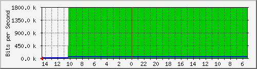
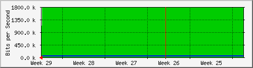

INTERNET 500 MB VIADUCTO
| System: | SW-12.126-DRL.Rack01.finanzas.df.gob.mx in Proxmox-10.1.250.* |
| Maintainer: | alberto <luis.a.lol@outlook.com> |
| Description: | GigabitEthernet7/31 |
| ifType: | ethernetCsmacd (6) |
| ifName: | Gi7/31 |
| Max Speed: | 125.0 MBytes/s |
| Ip: | No Ip (No DNS name) |
Estadísticas actualizadas el Jueves 21 de Julio de 2022 a las 14:35,
'SW-12.126-DRL.Rack01.finanzas.df.gob.mx' ha estado funcionando durante 492 days, 22:53:36.
Gráfico diario (5 minutos : Promedio)

|
Máx |
Promedio |
Actual |
| Entrante: |
1780.5 kb/s (0.2%) |
1550.1 kb/s (0.2%) |
144.0 b/s (0.0%) |
| Saliente: |
53.1 kb/s (0.0%) |
46.2 kb/s (0.0%) |
72.0 b/s (0.0%) |
Gráfico semanal (30 minutos : Promedio)
|
Máx |
Promedio |
Actual |
| Entrante: |
1780.5 kb/s (0.2%) |
1742.8 kb/s (0.2%) |
144.0 b/s (0.0%) |
| Saliente: |
53.1 kb/s (0.0%) |
51.9 kb/s (0.0%) |
80.0 b/s (0.0%) |
Gráfico mensual (2 horas : Promedio)

|
Máx |
Promedio |
Actual |
| Entrante: |
1780.5 kb/s (0.2%) |
1774.4 kb/s (0.2%) |
144.0 b/s (0.0%) |
| Saliente: |
53.1 kb/s (0.0%) |
52.9 kb/s (0.0%) |
80.0 b/s (0.0%) |
Gráfico anual (1 día : Promedio)
|
Máx |
Promedio |
Actual |
| Entrante: |
48.1 Mb/s (4.8%) |
2701.7 kb/s (0.3%) |
1780.5 kb/s (0.2%) |
| Saliente: |
13.8 Mb/s (1.4%) |
419.0 kb/s (0.0%) |
53.1 kb/s (0.0%) |
| VERDE ### |
Entrante:coming Traffic in Bits per Second |
| AZUL ### |
Tráfico saliente en Bits por segundo |